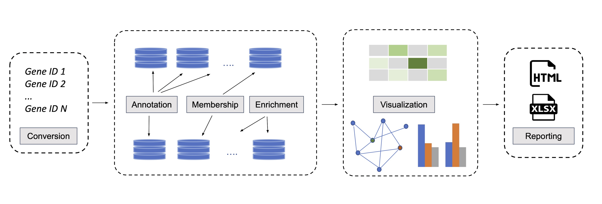

oncoEnrichR is an R package for functional interrogation of human genesets in the context of cancer. It is primarily intended for exploratory analysis, interpretation, and prioritization of long gene lists, which represent a common output from many types of high-throughput cancer biology screens.
oncoEnrichR can be used to interrogate results from e.g. genetic screens (siRNA/CRISPR), protein proximity labeling, or transcriptomics (differential expression). The tool queries a variety of high-quality data resources in order to assemble useful gene annotations and analyses in an interactive report (examples from the report shown below).
Web-based access to oncoEnrichR is available at https://oncotools.elixir.no

Questions adressed by oncoEnrichR
The contents of the analysis report provided by oncoEnrichR address the following scientific questions for a given gene list:
- Which diseases/tumor types are known to be associated with genes in the query set, and to what extent?
- Which genes in the query set are attributed with cancer hallmark evidence?
- Which proteins in the query sets are druggable in diffferent cancer conditions (early and late clinical development phases)? For other proteins in the query set, what is their likelihood of being druggable?
- Which protein complexes involve proteins in the query set?
- Which subcellular compartments (nucleus, cytosol, plasma membrane etc) are dominant localizations for proteins in the query set?
- Are specific tissues or cell types enriched in the query set, considering tissue/cell-type specific expression patterns of target genes?
- Which protein-protein interactions are known within the query set? Are there interactions between members of the query set and other cancer-relevant proteins (e.g. proto-oncogenes, tumor-suppressors or predicted cancer drivers)? Which proteins constitute hubs in the protein-protein interaction network?
- Which known regulatory interactions (TF-target) are found within the query set, and what is their mode of regulation (repressive vs. stimulating)?
- Are there occurrences of known ligand-receptor interactions within the query set?
- Are there specific pathways, biological processes, or pre-defined molecular signatures that are enriched within the query set, as compared to a reference/background set?
- Which members of the query set are frequently mutated in tumor sample cohorts (TCGA, SNVs/InDels, homozygous deletions, copy number amplifications)?
- Which members of the query set are co-expressed (strong negative or positive correlations) with cancer-relevant genes (i.e. proto-oncogenes or tumor suppressors) in tumor sample cohorts (TCGA)?
- Which members of the query set are associated with better/worse survival in different cancers, considering high or low gene expression levels, mutation, or copy number status in tumors?
- Which members of the query set are predicted as partners of synthetic lethality interactions?
- Which members of the query set are associated with cellular loss-of-fitness in CRISPR/Cas9 whole-genome drop out screens of cancer cell lines (i.e. reduction of cell viability elicited by a gene inactivation)? Which targets are prioritized therapeutic targets, considering fitness effects and genomic biomarkers in combination?
See also the output views that addresses each of the questions above.
News
- June 24th 2022: 1.2.0 release
- March 31st 2022: 1.0.9 release
- February 20th 2022: 1.0.8 release

Funding and Collaboration
OncoEnrichR is supported by the Centre for Cancer Cell Reprogramming at the University of Oslo/Oslo University Hospital, and Elixir Norway (Oslo node).